2022.04.22
桜田通さんは、LG Stylerの愛用者。そして時代のムードをキャッチして自分のスタイルに落とし込む、ファッション玄人でもあります。メゾンのコレクションへのゲスト参加や、ブランドのキャンペーンモデルを務めるなど、洋服に精通する桜田さんが、今、リアルに気分なコーディネートとは？ 旬な３ルックを披露していただき、 ご自宅でのLG Stylerの活用法も教えていただきました。
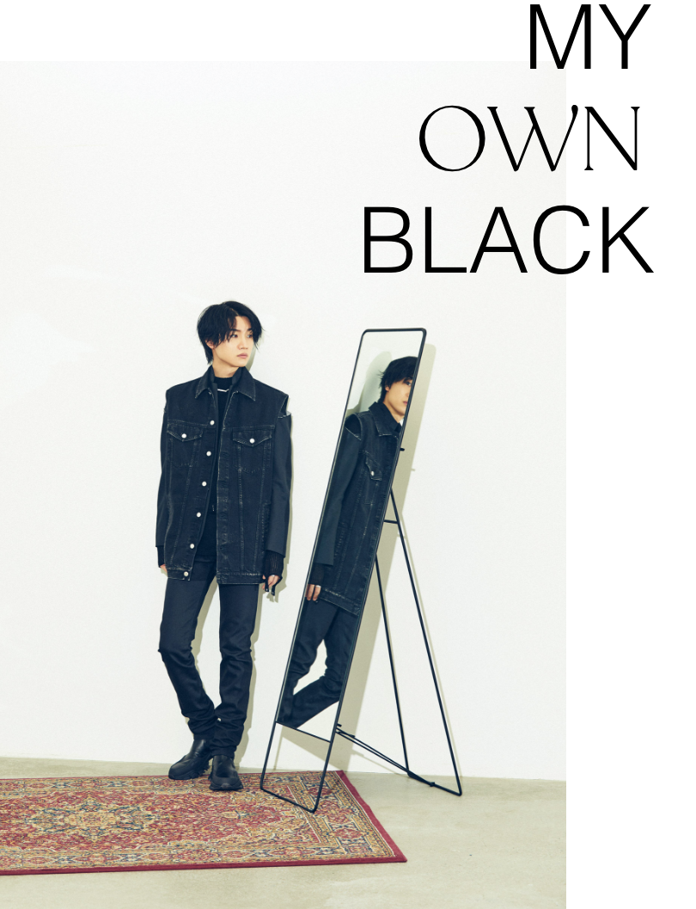
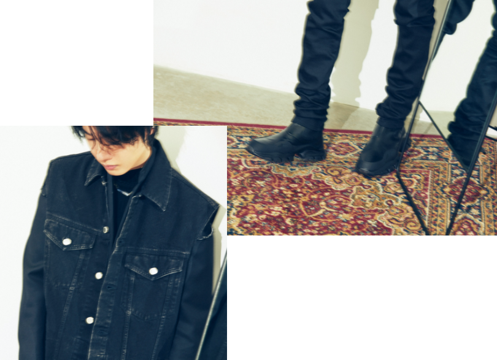
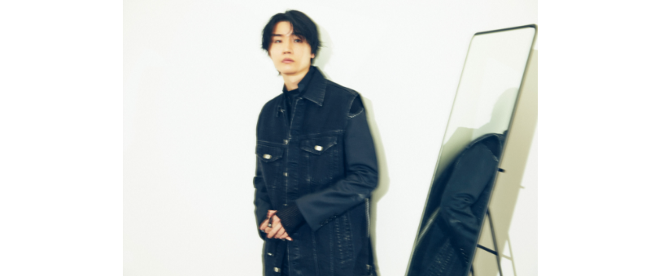
小学生の頃から、無意識のうちに黒が好き。黒ずくめ好きを自覚したのは高校生の頃ですね。ブラックのスタイルのなかでは、今また細めのパンツに惹かれています。数年ワイドパンツを穿くことが増えていましたが、昔よく履いていた細身は、改めて自分に馴染むな、と。とはいえ細すぎず極端ではないものが気分です。デニムも久しぶりに着たくなっていますね。黒のスタイル幅は割と広くて、あまり歩かない時はブーツ、楽に過ごす日はスリッポン、食事にはジャケット、友達と会う日のパーカ、と様々に楽しんでいます。
モードなJOHN LAWRENCE SULLIVANの着こなしに、6 Moncler 1017 ALYX 9SM コレクションのチェルシー ブーツを合わせ、異素材のブラックを織り交ぜた立体感あるワントーンスタイルに。
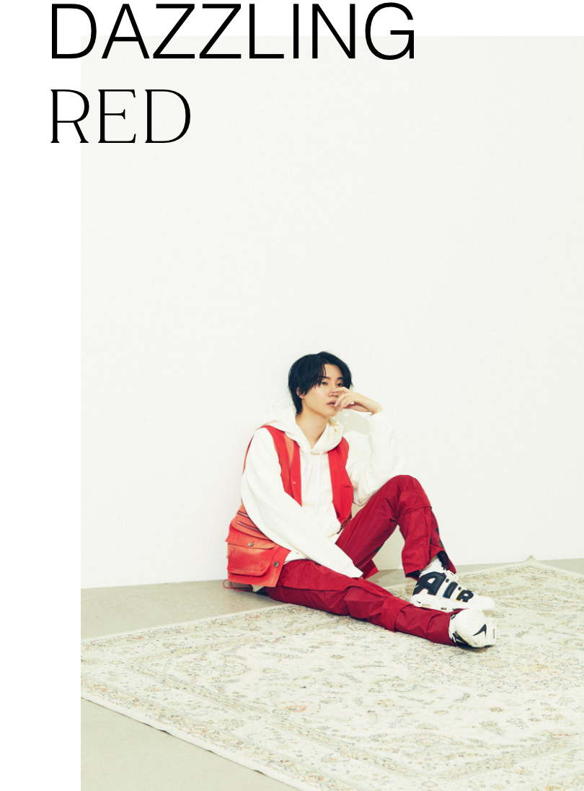
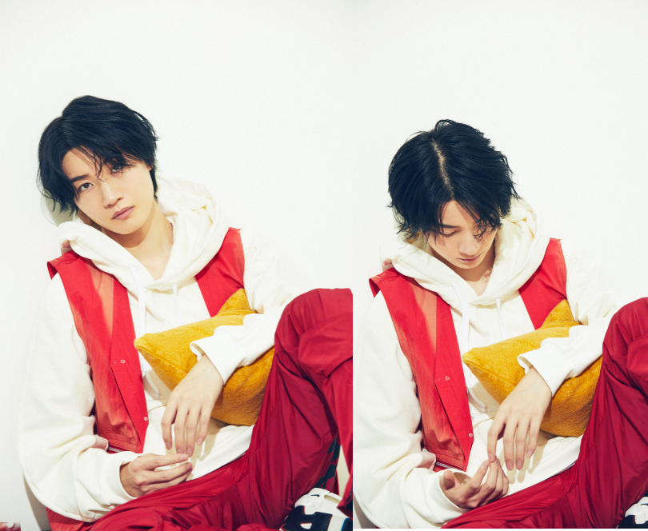
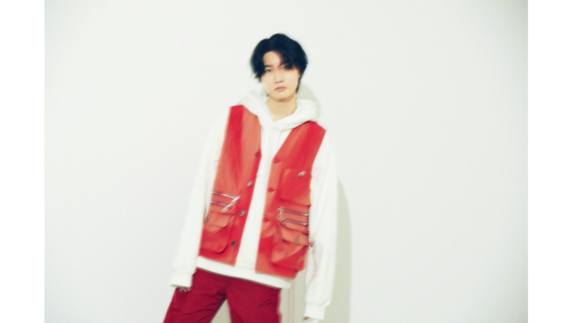
最も多い私服は、パーカーとスニーカー。車を運転するので、着心地が楽な服はついつい選びがちです。そしてこの赤は、すごく鮮やか…。日頃の、衣装やメイクが終わって初めて役になりきれる感覚からも、色の力は大きいと思っています。ビューティーのお仕事では、血色の良くなる赤い色を使うことがありますが、赤にはパッと目を覚めさせるような力がありますよね。昔は黒しか選ばなかったものの、お仕事のなかで多くのスタイリストさんや衣装と出会い、今や30歳にもなり、着る服の幅が徐々に広がりました。バックやシューズでカラーを取り入れることも増えました。
白と赤のコントラストが鮮やかなスタイルだが、着心地はリラックス感抜群。タフタナイロンのラウンジパンツは韓国の気鋭フォトグラファー 、チョ・ギソクが立ち上げたKUSIKOHCのもの。
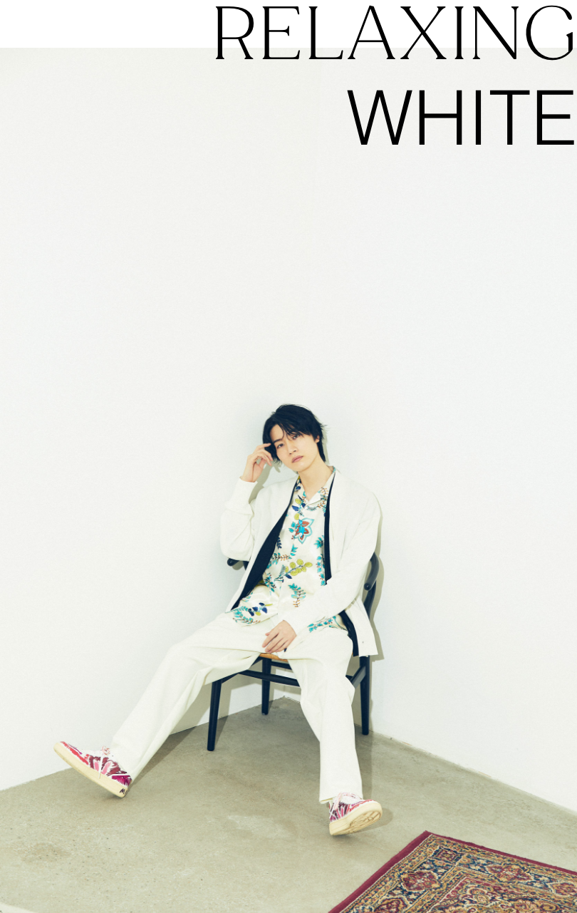
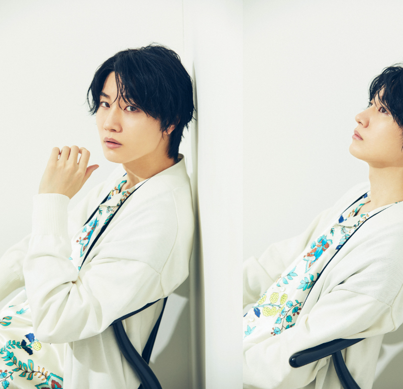
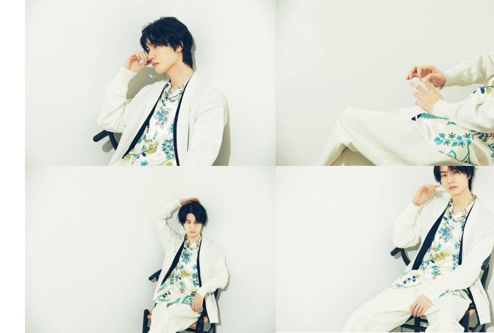
ゆるりとしたリラックス感が、まさに今の気分。より寛ぎたい日は、インナーをTシャツにするのもアリです。実は白って苦手意識のあった色で、昔は衣装でも避けていたくらい。それが今や白のセットアップもカッコよく映るので、自分の変化を感じます。こだわりは強い方ですが、大人になりながら、信頼している方々の意見を積極的に取り取り入れるようになって。白を着ると親しい方に褒めていただけることが多いんです。客観的に自分を見てくださっている方の意見は、大事ですね。
とろみのあるボタニカル柄のシャツに柔らかなカーディガンを羽織り、身も心もリラックス。そのCHINOの優しげなスタイルに、MARNIとVEJAの、スニーカーでアクセントを。
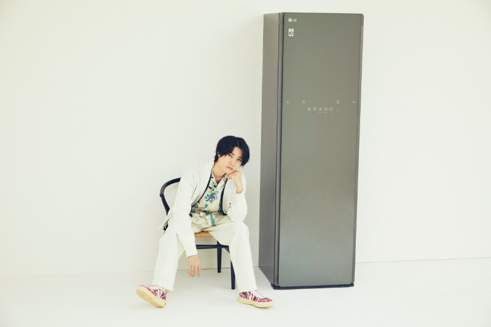
「あのシャツの感動、忘れません」
家電が好きで、気分を上げてくれたり生活をアップデートしてくれる便利なものをファンの方々と共有するのも楽しいんですよね。
LG Stylerの存在はもちろん知っていて欲しかったのですが、家具として部屋のレイアウトも考えなければ...と、やや出遅れて、３年前に入手。
そして最初にシャツを入れた時の感動は忘れられません。目に見える汚れではなく、羽織った感覚でわかる清潔さ。シワが伸びてふっくらした肌触り。これまでの洗濯の苦労は何だったのかと、目から鱗でした。
LG Stylerの存在はもちろん知っていて欲しかったのですが、家具として部屋のレイアウトも考えなければ...と、やや出遅れて、３年前に入手。
そして最初にシャツを入れた時の感動は忘れられません。目に見える汚れではなく、羽織った感覚でわかる清潔さ。シワが伸びてふっくらした肌触り。これまでの洗濯の苦労は何だったのかと、目から鱗でした。
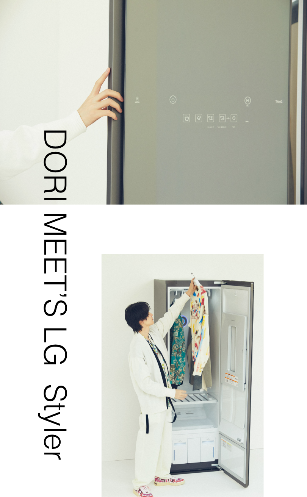
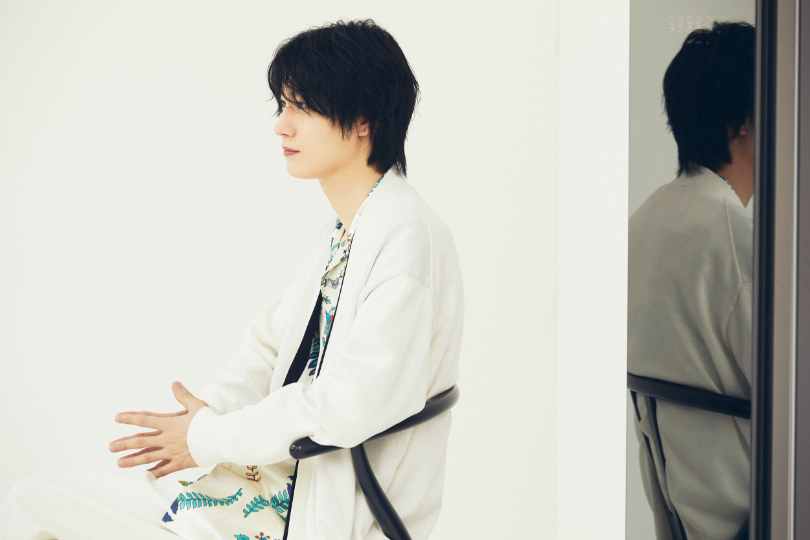
「もはや、生活に欠かせない」
3年前までLG Stylerナシでどう暮らしていたのか！？と思うほど、素晴らしい。冷蔵庫や洗濯機と必須の家電があるわけで、だとすればLG Stylerも絶対にその位置にあるべきモノ。こんなにもスムーズに大切な洋服をケアできて、生活の向上を感じられるなんて想像しませんでした。ホコリや花粉に雑菌ってどうしても洋服に付いてしまうもの。清潔にしたいけれど、洗濯機では型崩れが心配だったり、洗濯槽自体の清掃も必要だし、アイロンがけも大変…と、ジレンマがあったんです。それが簡単にケアできるようになり、悩みを全て解消してくれたのが LG Styler。もうこれナシでは生きていけません(笑)。
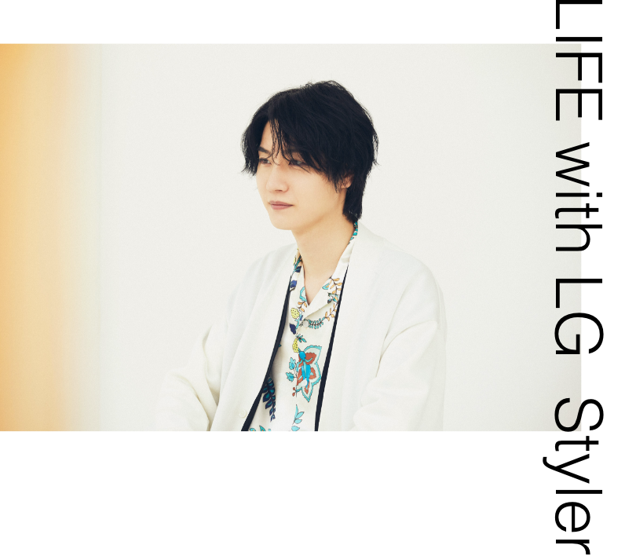
桜田通
1991年、東京都生まれ。ミュージカル「テニスの王子様」にて主演。その後、2008年に映画「劇場版さらば仮面ライダー電王 ファイナル・カウントダウン」で野上幸太郎 役で主演。以降、ドラマ「わたし、定時で帰ります。」(TBS)、「今際の国のアリス」（Netflix）、映画「君の膵臓をたべたい」、「Back Street Girls -ゴクドルズ-」と多数出演し、2019年の映画「ラ」でも主演を務めた。
1991年、東京都生まれ。ミュージカル「テニスの王子様」にて主演。その後、2008年に映画「劇場版さらば仮面ライダー電王 ファイナル・カウントダウン」で野上幸太郎 役で主演。以降、ドラマ「わたし、定時で帰ります。」(TBS)、「今際の国のアリス」（Netflix）、映画「君の膵臓をたべたい」、「Back Street Girls -ゴクドルズ-」と多数出演し、2019年の映画「ラ」でも主演を務めた。
Composition & Text: Takako Nagai [CATAL DESIGN]